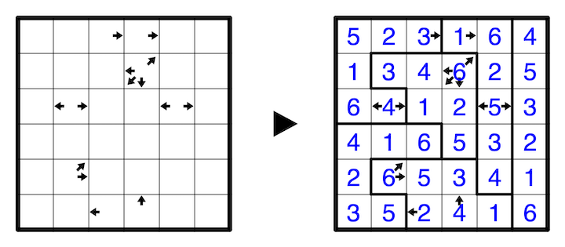
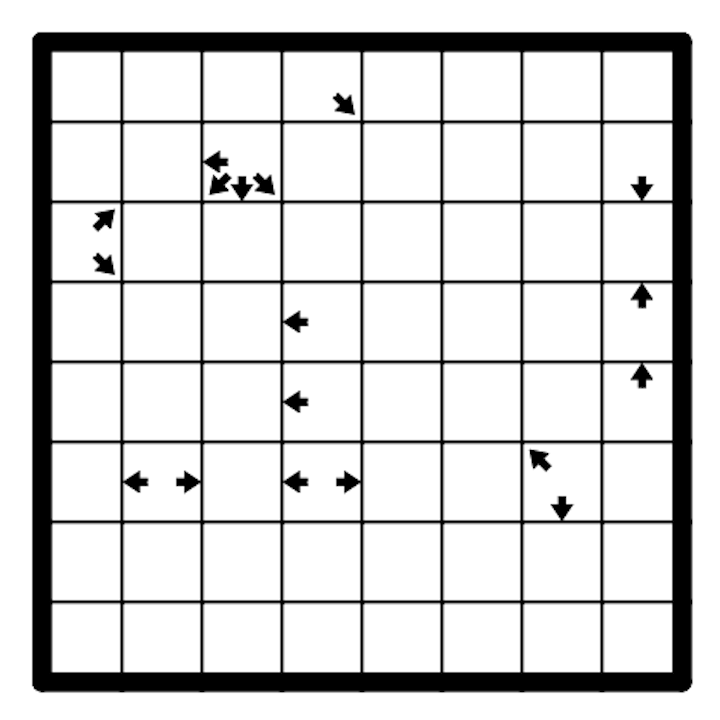

Place the numbers from 1 to 8 exactly once in every row, column, and region. Each region is orthogonally connected and must be located by the solver. A cell with an arrow (or arrows) indicates how many cells in the indicated directions combined that do not belong to the same region as that cell. A 6x6 example is provided:  SudokuPad penpa+ 